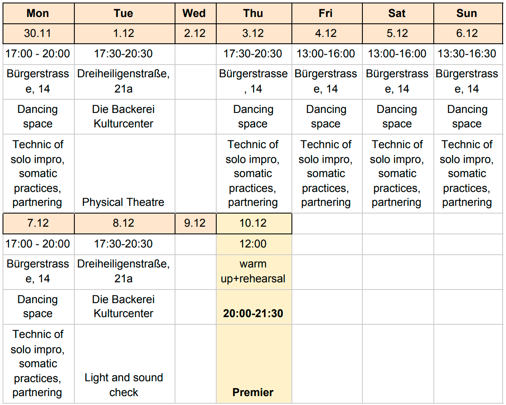

|
THROUGHPhysical Theatre Project “Some men have thousands of reasons why they cannot do what they want to, when all they need is one reason why they can” Martha Graham Open call for non-professional and professional artists (dancers, actors, poets, painters, musicians, etc) as well as for beginners who would like to join in a week of performance workshops culminating in a full production at Die Backerei Culture Center. The concept of the project “THROUGH” is “Here and Now” and very spontaneous; workshop participants will improvise with a clear score during the performance. There is small fee for participation. |
Methodology: If you have never tried performing - it’s your chance. We are open to the possibility of bringing people together with different dance experiences. If you are a professional artist or a beginner - our doors are open to you. A method of creation is improvisation - every participant will have the opportunity to express their thoughts and feelings. We are here to support and guide you. ...see you there |
Facilitators and tutors:Production - Tamara Maksymenko
Tamara Maksymenko |
Łukasz Czapski |


“TROUGH”
Physical theatre project
Total time: 24 hours per 11 days
Dates: November, 30 - December, 10
Addresses: Bürgerstrasse, 14; Dreiheiligenstraße, 21a
Participant’s cost: 250 euro
You will receive: 24 hours of workshops; possibility to perform with professional artists; completely done media production; as well as photo and video from the event. And the most important thing this project gives you the possibility to explore and express your thoughts.
Amount of participants: 10 only
Age: 20 - 90 years old
Attention: we have 2 spots for teenagers, if you would like your child participate in this project, please, send a mail to motion.mode.theatre@gmail.com with short bio of child and photos
Foreigner: Project requires your presence in Tirol Land during the whole period, from November 30th to December 10th 2020 (check the schedule). We can help you to find accomodation or ask locals to host you. Ask please for this in the registration form “message” field.
Registration for participation is OBLIGATORY:
https://docs.google.com/forms/d/1gCpXRMecjE3mGJdhD0z-X-UmbpyHYm3WZGPfGvFkGng/edit
and require 50 % of prepayment to:
IBAN AT812050303302468446 - TAMARA MAKSYMENKO
The project can be postponed in the circumstances of CORONA- regulations.
Premier performance: December 10th,
20:00 - Die Backerei
Kulturbackstube / Innsbruck
Timetable

P.S. The address of rehearsal space and timetable could be adapted in a bit different
way during next month. All registered participants will receive info about it.
All the best, and see you in December,
Tamara and Lukasz